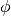
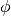
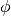

The conventions used throughout the code are summarized in the following.
Spherical coordinates (, , ) as commonly used in physics: radial distance r, polar angle (theta), and azimuthal angle (phi).
 ,
,  , ) as commonly used
in physics: radial distance r, polar angle
, ) as commonly used
in physics: radial distance r, polar angle